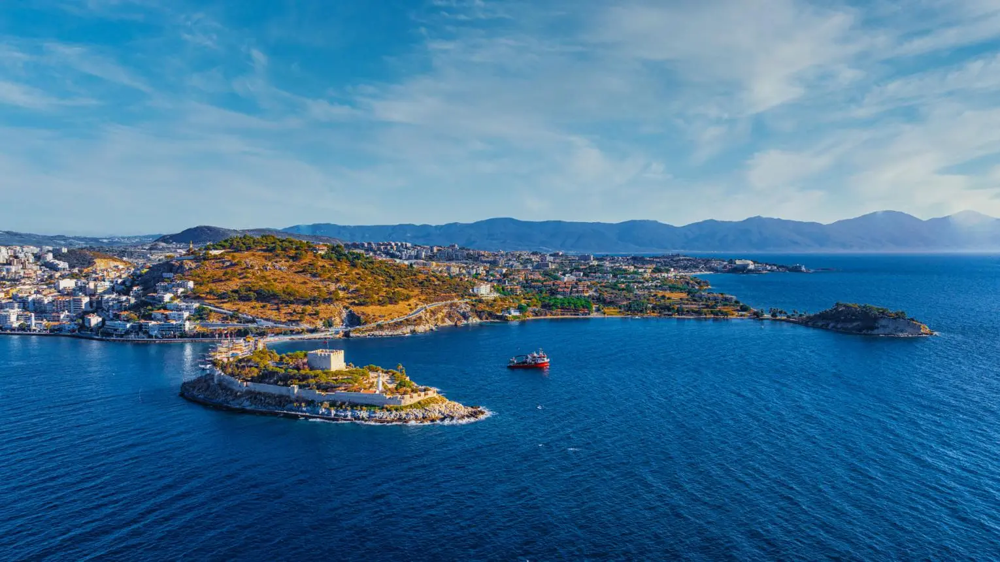
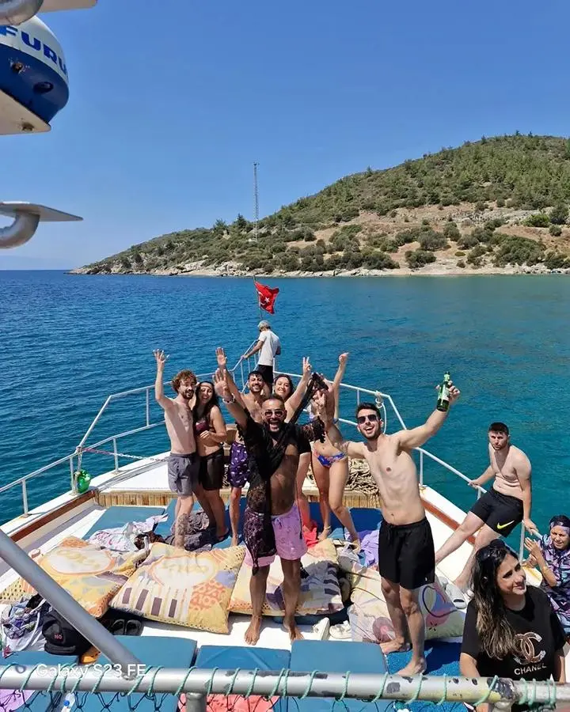
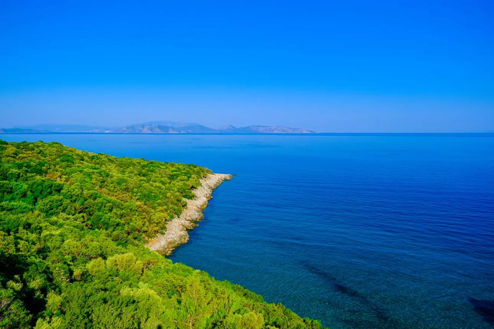
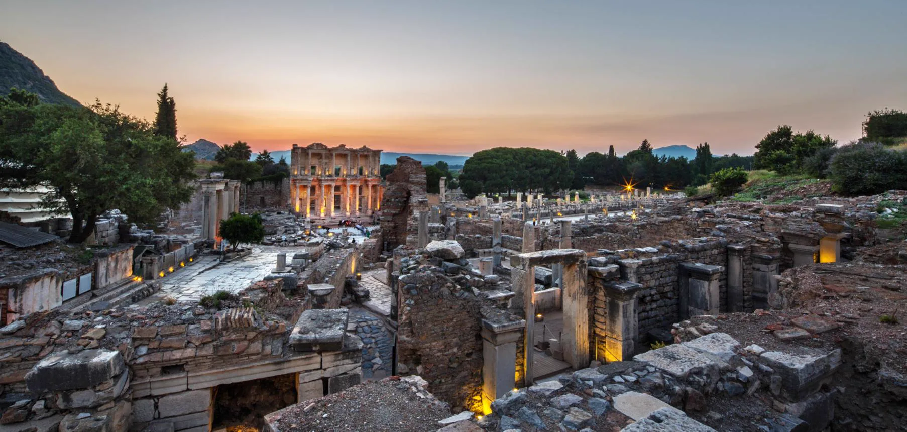
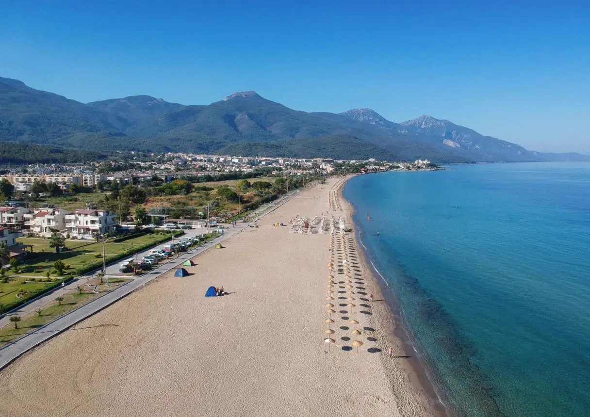

Kuşadası'nda Gezilecek Yerler (2026 Güncel Rehber)
Kuşadası çevresindeki en popüler gezilecek yerleri keşfedin: Dilek Yarımadası Milli Parkı, Zeus Mağarası ve Güvercin Ada Kalesi.
Devamını Oku →Seyahat Rehberi & Haberler

Kuşadası çevresindeki en popüler gezilecek yerleri keşfedin: Dilek Yarımadası Milli Parkı, Zeus Mağarası ve Güvercin Ada Kalesi.
Devamını Oku →
Kuşadası'nın en keyifli aktivitelerinden tekne turlarını keşfedin. Güzelçamlı çıkışlı turlar, gizli koylar ve eşsiz Ege manzaraları.
Devamını Oku →
Kuşadası'nın incisi Dilek Yarımadası Milli Parkı'nı keşfedin: 800'den fazla bitki türü, berrak koylar ve doğa yürüyüş parkurları.
Devamını Oku →
Efes Antik Kenti rehberi: Celsus Kütüphanesi, antik tiyatro, mermer cadde ve Kuşadası'ndan ulaşım bilgileri.
Devamını Oku →
Güzelçamlı plajları: Sevgi Plajı, Dilek Yarımadası koyları ve sahil bilgileri. Huzurlu deniz tatili için rehber.
Devamını Oku →